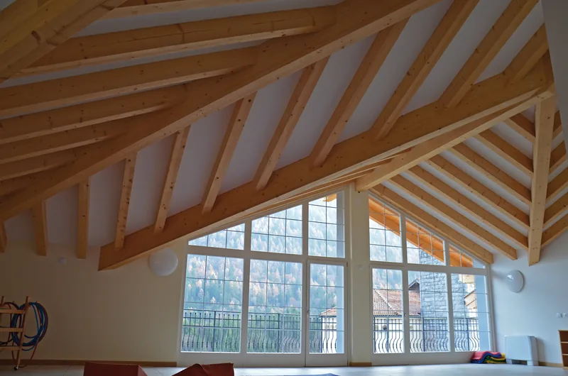
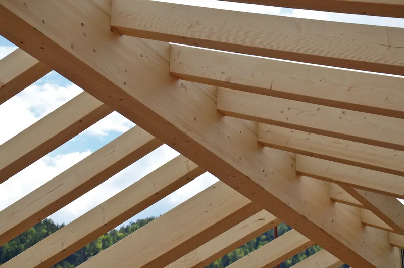
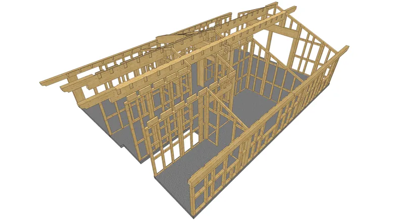

Tetti in legno, dal tronco al cantiere
Legno, progetto e taglio escono dalla stessa segheria, qui a Giulis. Tetti nuovi, sovralzi, soppalchi, solai, portici e chioschi, in massello o in lamellare.

Che lavoro avete in mente?
Il servizio è lo stesso per tutti: rilievo in cantiere, progetto esecutivo, produzione degli elementi a controllo numerico e posa. Cambiano il legno e la struttura.

Servizio completo
Tetti, soppalchi, solai, chioschi e portici: come lavoriamo, dal primo sopralluogo alla posa in opera.

Legno massello
Naturale e senza colle, in gran parte da foreste trentine certificate PEFC.

Lamellare e bilama
Per le luci grandi, le travi curve e meno fessure da ritiro.

Sovralzi e case al grezzo
Pannelli in X-lam o a telaio che si montano a secco, in poco tempo.

Le realizzazioni
Case, baite, alberghi e portici usciti dalla nostra segheria.
Massello, bilama o lamellare?
Tre materiali, tre usi diversi. Ve lo consigliamo noi dopo il rilievo: qui trovate le differenze in breve.
| Massello | Bilama | Lamellare | |
|---|---|---|---|
| Com'è fatto | Legno naturale, senza colle | Uno o due piani di incollaggio verticale, secondo la dimensione | Lamelle sovrapposte e incollate: legno ingegnerizzato |
| Punto forte | Naturale, stagionato in essiccatoio prima del taglio | L'aspetto del massello, con meno fessure da ritiro | Sezioni alte oltre 2 metri, travi curve, lunghezze limitate solo dal trasporto |
| Essenze | Abete, larice, douglasia, rovere, castagno | Larice, abete | Larice, abete |
| Provenienza | In gran parte foreste del Trentino certificate PEFC | Foreste di Svezia e Finlandia | Foreste di Svezia e Finlandia |
Oltre alla struttura
Il tetto può arrivare in cantiere già trattato e completo di tutto quello che serve per chiuderlo.
- Trattamenti
- Impregnanti antitarlo e antimuffa all'acqua.
- Strati del tetto
- Guaine, isolanti, listelli e tavolati.
- Manto di copertura
- Tegole, coppi o scandole.
- Finiture
- Mantovane e finestre per tetto, con il cassonetto in legno.
Alcuni tetti fatti da noi
Tetti nuovi su case in pietra, palazzine, ville, baite. Tutte le realizzazioni


Domande sui tetti
Il tetto lo montate voi?
Il servizio va dal rilievo in cantiere alla posa in opera. Il montaggio lo fanno squadre di carpentieri specializzati della zona, con gli elementi già tagliati da noi.
Il legno è trattato?
Le strutture possono essere trattate con impregnanti antitarlo e antimuffa all'acqua. Per il legno esposto alle intemperie c'è anche l'impregnazione con la tinta che preferite.
Fornite anche isolanti e copertura?
Sì: guaine, isolanti, listelli, tavolati, manto di copertura (tegole, coppi o scandole), mantovane e finestre per tetto.
Il legno strutturale è certificato?
Il massello a uso strutturale ha la marcatura CE secondo la UNI EN 14081-1, e dal 2011 siamo qualificati dal Consiglio superiore dei lavori pubblici per la lavorazione di elementi strutturali in massello e lamellare. I certificati
Raccontateci il lavoro
Bastano due righe: che lavoro è, in che comune e più o meno che misure. Se avete un progetto o delle foto, meglio ancora. Poi vi richiamiamo noi.
Telefono 0465 621159 · info@segheria-lombardi.it